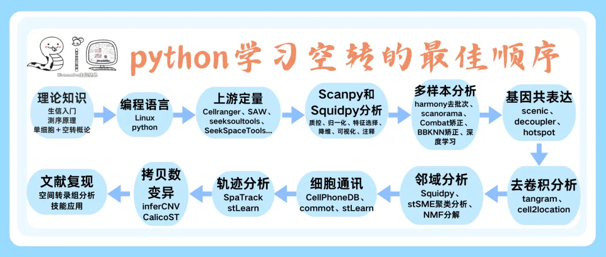

Python学习空间转录组的最佳顺序
原文：https://mp.weixin.qq.com/s?__biz=MzAwMzIzOTk5OQ==&mid=2247535282&idx=1&sn=ea2103b4dd55f40a09d0e76090775f7b&chksm=9b3c33e2ac4bbaf4dfb8fc7eb80c3fc91955910fddc8380543791a5ca6627accc94020a20da0#rd 合集：空间转录组

Python空间转录组的最佳学习路线

 我们已经分享了R语言单细胞学习路线，本推送也回答一个常见问题：“我要学空间转录组，应该按照什么顺序开展学习？”。以下是我们打磨了数月的课程学习顺序及python空转的最佳学习路线：
我们已经分享了R语言单细胞学习路线，本推送也回答一个常见问题：“我要学空间转录组，应该按照什么顺序开展学习？”。以下是我们打磨了数月的课程学习顺序及python空转的最佳学习路线：

1、理论课程：包含生物信息学、高通量测序、单细胞和空转建库原理及流程介绍。2、编程基础：首选不推荐用自己的电脑做生信，学好Linux、生信Python速查手册3、定量分析(可选)：很多同学拿到的都是定量后的矩阵，但是我们也给大家介绍了Cellranger、SAW、Space Ranger和SeekSpaceTools等软件的定量分析。4、基础分析（Scanpy和Squidpy分析）：空间转录组数据基础分析手册可以说是空间转录组的核心、是基于最新的Python环境与Scanpy、Squidpy版本的分析，主要内容有：数据质控、归一化、特征选择、降维、空间基因表达和聚类可视化、spot的基础注释等。5、多样本分析：空间转录组|多样本整合分析手册重点介绍harmony去批次、Scanorama、Combat矫正、BBKNN矫正及深度学习模型等方式处理空间转录组多样本整合方法，有效解决传统分析中批次效应难以精准校正的核心问题。6、基因共表达分析：以调控细胞分化、细胞类型转换的基因调控网络为研究核心，依托SCENIC、hotspot、decoupler等工具，系统开展空间转录组基因共表达网络分析，全面覆盖主流基因调控分析需求。7、去卷积分析：空间转录组反卷积分析解析每个spot中细胞类型组成比例的过程，进而达到从混合表达信号中推断细胞类型空间分布模式的目的。8、邻域分析：邻域分析是基于空间位置的细胞/spot邻域划分与表达谱分析，具有从“单细胞”到“细胞群落”的表型解析，揭示群体功能的核心价值，以及阐明细胞间通讯、微环境异质性、结构-功能关联的生物学意义。9、细胞通讯：空转细胞通讯能够整合空间坐标、细胞类型与基因表达数据，解析细胞-细胞相互作用及组织微环境调控机制。CellPhoneDB、Commot、stLearn是搞定空转细胞通讯分析的很好选择。10、轨迹分析：轨迹分析可重构潜在的生物学动态过程（如分化、发育、响应、演化等）的拓扑结构与相对顺序。在空转中，向大家推荐SpaTrack与stLearn这两种工具。11、拷贝数变异：空间转录组拷贝数变异分析 通过推断其染色体拷贝数状态，为空转数据的 肿瘤细胞鉴定与异质性评估提供了方法。inferCNV和CalicoST是空转进行CNV分析很好的选择。** **学习完以上内容，就到实战环节了，大家可以试试能否独立复现一篇完整的文章： 《Nature Genetics》文献复写 | 结直肠癌免疫细胞的高清空转分析（Visium HD+Xenium）搞定以上内容，你大概率就可以独立完成SCI与硕博论文的单细胞工作啦，期待你的好消息：欢迎致谢。
手把手教你空间转录组
如果你需要手把手教学，欢迎联系客服微信[Biomamba_zhushou]报名：

更多全程班可参考：共计251小时视频教程，保姆级单细胞&空转教学
空间转录组
空间转录组可谓是高、新、贵技术，我们更过以下内容： 如果你希望有人真的手把手教你学空间转录组： 69h空转视频！从 “零基础”到“复现《Nature Genetics》代码” 技术贴空间转录组学习手册合辑Seurat空间转录组学习手册Scanpy空间转录组学习手册Stereopy空间转录组学习手册Squidpy空间转录组学习手册一文搞定空间转录组与单细胞测序的整合分析如何将已经构建好的Seurat空转对象转存为原始文件？10X Visium上游定量过程CellChat空转细胞通讯合辑日常吐槽一文掌握六个空转数据库一文搞定空间转录组与单细胞测序的整合分析一次性读取文件夹下所有Visium数据Tangram利用深度学习完成空间与单细胞数据的整合空间转录组数据基础分析手册空间转录组|多样本整合分析手册一文学会三种空转数据共表达网络分析一文搞定空转数据反卷积分析三种方法教你搞定空转数据邻域分析：squidpy+stSME+NMF分解空转细胞通讯分析学习手册：CellPhoneDB+Commot+stLearn空间转录组轨迹分析学习手册空间转录组数据拷贝数变异分析学习手册《Nature Genetics》文献复写 | 结直肠癌免疫细胞的高清空转分析（Visium HD+Xenium）空间转录组NMF降维分群FlashDeconv：三分钟帮你处理100万个spots
向下滑动查看更多
空间转录组SeekSpace系列为了进一步推动单细胞科研的发展，寻因生物推出了“2024 寻因Space行知计划”，愿与行知者携手，一直游到海水变蓝。
**一文学会单细胞空转定量| SeekSpace® Tools **
SeekSpace空转| banksy空间邻域分析理论+实操
向下滑动查看更多
文献解读
《Cell》| Stere-Seq力作 空间转录组与单细胞转录组整合分析工具大比拼 《Nature》空间转录组综述 基于scRNA-Seq &空间转录组的AKI研究真·单个细胞级别的空间转录组宋尔卫院士的儿子以共一身份发表《Cell》！有免疫特征的基质细胞，有没有可能是双细胞？Squidpy: 一站式完成空间多组学数据分析临床样本+单细胞+空转=IF4.8？ 《Nature》经典综述：空间转录组学探索组织结构单细胞空间转录组在脑科学领域的应用 《Nature Methods》教你如何挑选空转平台 Tangram利用深度学习完成空间与单细胞数据的整合 空间转录组做到啥程度能"硕士"毕业？空间转录组做到啥程度能博士毕业？****2024年了, 都哪些组织有空转数据(小鼠篇) 2024年了, 都哪些组织有空转数据(人类篇) 2025年了, 都哪些物种有空转数据？ 《Nature》：Slide-tags实现多模态空间基因组学的单核条形码谁说一定要去卷积，亚细胞分辨率空转分析的新方法《Nature Methods》新算法|MARBLE利用几何深度学习解释神经群体动力学Stereopy终于上架《NC》啦《Nature Biotechnology》：稳定的空转细胞解卷积方法—RCTD《Brief Bioinform》: 鼠脑单细胞与Stereo-seq数据整合算法评估《Cancer Cell》|时空单细胞分析揭示结直肠癌免疫治疗不同反应的细胞动态最全综述|一文了解单细胞和空间组学的分类与应用《Cell Metabolism》| 多组学联用挖掘肾脏致病基因Spatial-Mux-seq空间多组学，一网打尽染色质特征、转录组、蛋白质修饰与表达《Cell》综述| 空间组学的常见分析《NBT》| Cell2location注释空间数据细胞2025年了，空间组学都有哪些分类与应用？博士论文解析|空间转录组测序样本准备及在帕金森病中的应用研究博士毕业论文解析| 基于空间转录组学技术对原发性肝癌空间异质性的研究博士毕业论文解析| 利用时空多组学解析肝脏功能结构及肝再生、肝纤维化分子机制《NC》新工具：HERGAST揭示超大空转切片的精细空间结构 &放大基因表达信号《NBT》| Cell2location注释空间数据细胞《Advanced Science》单细胞联合空转揭示PROS1-MERTK信号轴驱动甲状腺微小乳头状癌肿瘤微环境《Advanced Science》单细胞联合空转揭示PROS1-MERTK信号轴驱动甲状腺微小乳头状癌肿瘤微环境《Science Advances》11例样本图谱文章，空间转录组揭示特发性肺纤维化病理特征
向下滑动查看更多

如何联系我们

 留一个领取资料、开箱即用的单细胞分析镜像的微信号[Biomamba_zhushou]，方便各位随时交流。同时我们也构建了交流群矩阵，欢迎大家入群讨论。
大家可以阅读完这几篇之后添加给生信入门初学者的小贴士
没有检索，就没有发言权
留一个领取资料、开箱即用的单细胞分析镜像的微信号[Biomamba_zhushou]，方便各位随时交流。同时我们也构建了交流群矩阵，欢迎大家入群讨论。
大家可以阅读完这几篇之后添加给生信入门初学者的小贴士
没有检索，就没有发言权
已有生信基地联系方式的同学无需重复添加

 您点的每个赞和在看，我都认真当成了喜欢
您点的每个赞和在看，我都认真当成了喜欢